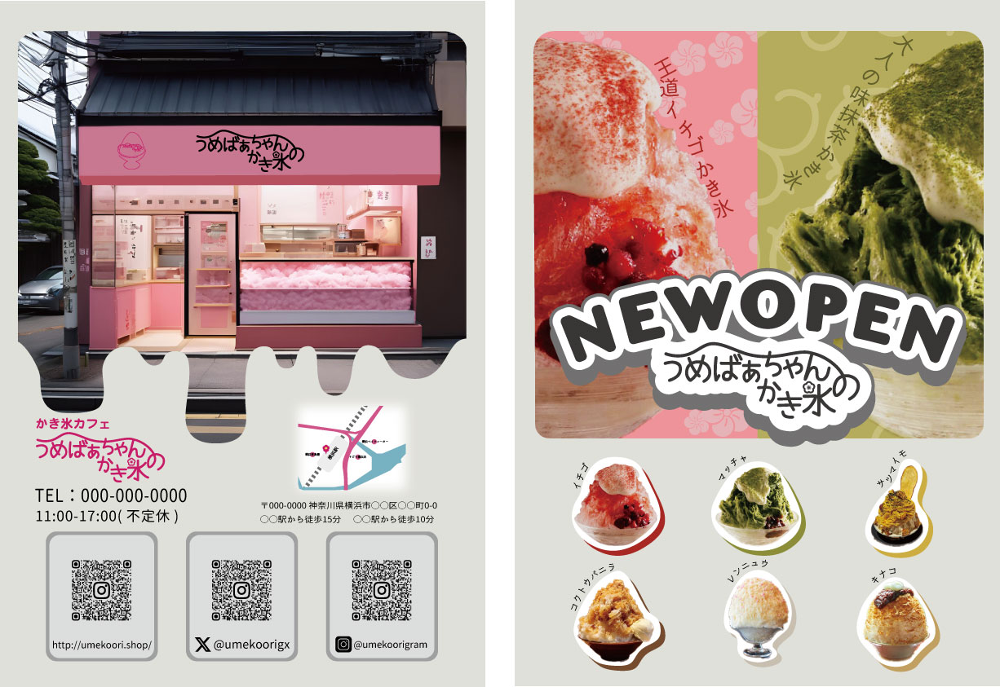

02
Web / 比較制作
2024
うめばぁちゃんの
かき氷やさん
架空のかき氷店を題材に、同じデザインを2通りの方法で制作しました。 ひとつはノーコードのツールで、もうひとつはHTML/CSSを書いて。
なぜ2通り作ったか
ノーコードで作れるなら、なぜコードを書く必要があるのか。自分で答えを出したくて、まったく同じデザインを両方で組みました。結果として、細かい余白や文字の詰め、表示速度は書いたほうが自由に決められること、一方で更新のしやすさはツール側に利があることが、手を動かしてわかりました。
クライアントに「どちらで作りますか」と聞かれたとき、感覚ではなく理由で答えられるようになったのがこの課題の成果です。
デザインで意識したこと
かき氷のシロップの色をそのまま配色に使い、苺・小豆・抹茶・さつま芋の4色で章立てしました。おばあちゃんのシルエットを通しのモチーフにして、お店のイメージが想像しやすいデザインにしました。
紙まで作った
Webだけでなく、ショップカードとOPENチラシもIllustratorで制作しました。画面と紙で世界観がずれないよう、同じ書体と配色で統一しています。

| 制作年 | 2024年 |
|---|---|
| 種別 | 課題制作（架空の店舗） |
| 担当 | デザイン・コーディング・印刷物 |
| 技術 | HTML / CSS、ノーコードツール |
| 使用ツール | Illustrator / Photoshop / Visual Studio Code |
| 成果物 | Webサイト2種・ショップカード・チラシ |
| ソース | GitHubで公開 |